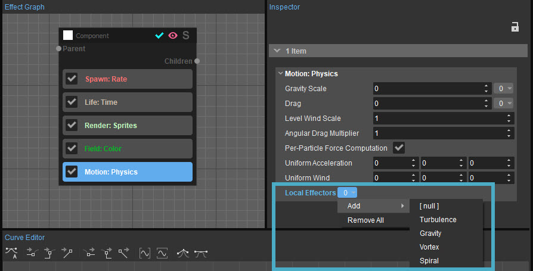

Обзор
Эффекторы — это особый тип модификаторов, которые используются Движение: Физика функция. Они применяют к частицам неоднородные силы и используются для придания изюминки обычному физическому движению.
Дополнительную информацию о физике элементарных частиц см. Движение раздел.
Эффекторы можно найти в разделе Местные эффекторы раскрывающееся меню и включает в себя следующие параметры:
Модификаторы и эффекторы можно комбинировать для создания сложных эффектов.

Турбулентность
Турбулентность имитирует движение частиц в участвующей среде, такой как воздух или вода. Хотя участвующие среды могут быть невидимыми в играх, имитация их турбулентности позволяет создавать сложные и убедительные эффекты.
Этот эффектор создает впечатление, что частицы плавают в среде, а не кажутся находящимися в вакууме. Эффектор турбулентности применяется в мировом пространстве и не зависит от родительского местоположения.
Дополнительные сведения об отношениях родитель-потомок см. SecondGen.
Свойства | Описание |
|---|---|
Режим | Указывает тип турбулентности, которую необходимо моделировать:
Simplex и Simplex Curl работают, только если Перетащите установлено на значение, отличное от 0. Чем выше сила сопротивления, тем быстрее частицы попадают в симплексное поле. Curl имеет немного более высокую стоимость, чем Simplex. Однако оба метода значительно дороже, чем броуновские. |
Скорость | Определяет, насколько быстро турбулентность применяется к частицам. Фактическое поведение будет зависеть от режима. |
Размер | Используется только Simplex или Simplex Curl. Турбулентность использует симплексный шум для создания векторного поля, который похож на шум Перлина, но в некоторых случаях может быть более эффективным. Этот тип шума создает равномерную сетку вершин в пространстве и присваивает каждой вершине случайное значение. Фактическая скорость, приложенная к частице, интерполируется из этой сетки. Таким образом, размер определяет расстояние между этими вершинами в этой сетке. Если размер слишком мал, турбулентность станет более случайной, нечеткой и рассеянной. Если размер слишком велик, частицы начнут двигаться преимущественно в одном направлении и никаких интересных форм не возникнет. |
Ставка | Используется только Simplex или Simplex Curl. Одним из основных преимуществ симплексного шума является то, что он относительно эффективен не только для генерации плавного шума в пространстве, но и для плавного изменения шума во времени. Скорость контролирует, насколько быстро происходит эта эволюция. Значение 0 означает отсутствие эволюции и частицы всегда будут перемещаться по одним и тем же маршрутам. |
Октавы | Используется только Simplex или Simplex Curl. Добавляет дополнительную сложность за счет многократной выборки шумового поля с разными размерами. Эта опция позволяет создавать фрактальный шум. Октавы соответствуют количеству выборок шумового поля — это может быть довольно дорого. |
Масштаб | Позволяет неравномерное масштабирование турбулентности. |
Гравитация
Гравитация применяет гравитационную силу ко всем частицам относительно точки пространства. Хотя глобальная гравитация является однородной силой, этот вариант является неоднородным.
Гравитация не требует Перетащите и это влияет только на ускорение. Фактически, более высокое сопротивление уменьшит эффект гравитации. А еще Гравитация Масштаб не масштабирует этот эффект, он масштабируется только глобальной гравитацией.
| Свойства | Описание |
|---|---|
Цель | Указывает источник гравитации для каждой частицы:
|
Целевое смещение | Смещает источник гравитационного поля в космосе. |
Тип | Формирует гравитационное поле:
|
Ускорение | Максимальная величина ускорения, приложенного к частицам, в метрах в секунду в квадрате (м/с2). Если это значение отрицательное, частицы отклоняются, а не притягиваются к цели. |
Распад | Ускорение не применяется ко всем частицам равномерно, оно затухает по мере удаления от цели. Затухание соответствует расстоянию в метрах, на котором ускорение уменьшается вдвое. Распад подчиняется закону обратных квадратов. Это не является физически точным, но предотвращает сингулярность в целевой позиции и гарантирует, что свойство Acceleration соответствует максимально возможному ускорению. Как следствие, невозможно создать правильные орбиты. |
Ось | Действует только в том случае, если выбран цилиндрический тип. Указывает направление оси в родительском пространстве. |
Вихрь
Vortex имитирует эффект турбулентного ветра.
Эффектор вихря влияет на скорость ветра и требует Перетащите вариант. Чем выше значение сопротивления, тем быстрее частицы прилипают к вихрю.
Свойства | Описание |
|---|---|
Цель | Указывает, где должен появиться центр вихря:
|
Целевое смещение | Смещает центр вихря в пространстве. |
Скорость | Максимальная скорость ветра, образуемого вихрем. Значение скорости рассчитывается в метрах в секунду. |
Распад | Скорость ветра не применяется ко всем частицам равномерно, она затухает с расстоянием до цели. Затухание соответствует расстоянию в метрах, на котором ускорение уменьшается вдвое. Распад подчиняется закону обратных квадратов. |
Направление | Направление ветра; по часовой стрелке или против часовой стрелки. |
Ось | Указанное направление оси вихря в родительском пространстве. |
Спираль
Заставляет частицы двигаться по спирали в зависимости от их скорости. Может использоваться для создания определенных типов эффектов турбулентного движения.
Недвижимость | Описание |
|---|---|
Размер | Указывает размер спирали. |
Скорость | Определяет скорость частиц вокруг спирали. |
GPU Поддержка
Все эффекторы поддерживаются конвейером GPU. Однако следует учитывать некоторые ограничения, связанные с тем, как система GPU обрабатывает частицы;
- Одновременно может быть активен только один эффектор каждого типа.
- Порядок, в котором эффекторы располагаются и выполняются, всегда следующий:
- Броуновский - Турбулентность
- Симплекс — Турбулентность
- Симплексный завиток — турбулентность
- Гравитация
- Вихрь